CS280A · Project 4
Image Warping and Mosaicing
In Part A, we shoot photos from a fixed center of projection, recover the homographies between them, warp images with inverse warping, and blend them into panoramic mosaics.
Part A
Part A · Image Warping and Mosaicing
Part A · A.1
Shooting the Pictures
Set 1 · St. Petersburg Riverfront
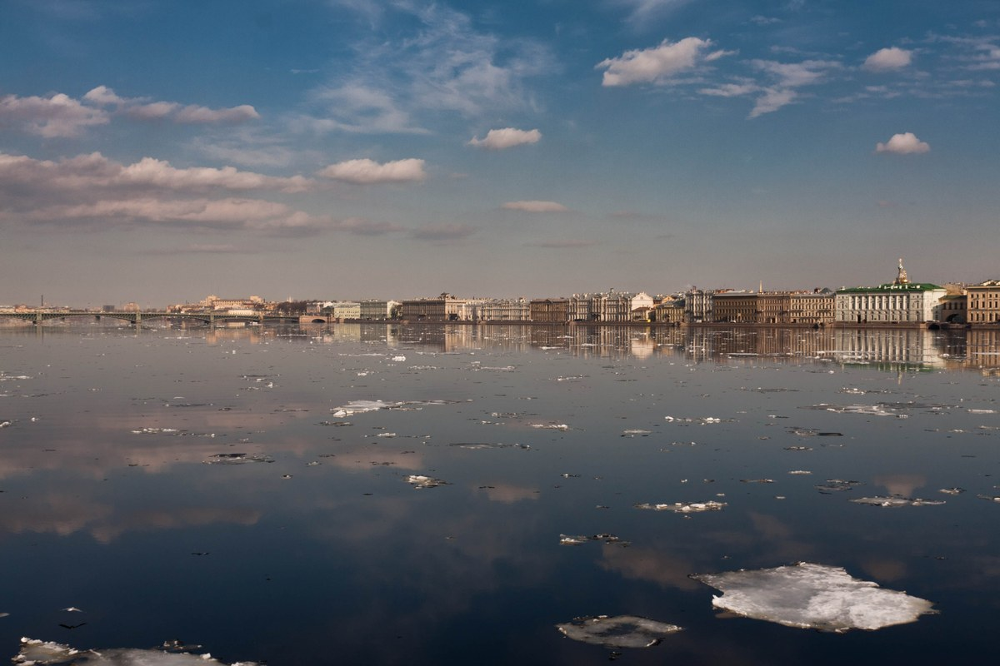
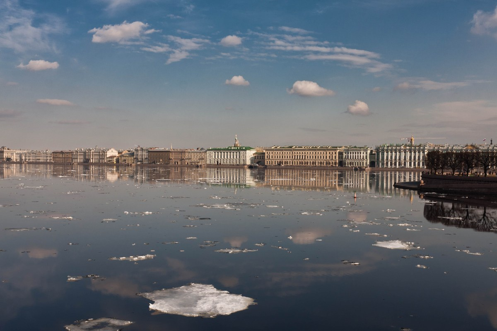
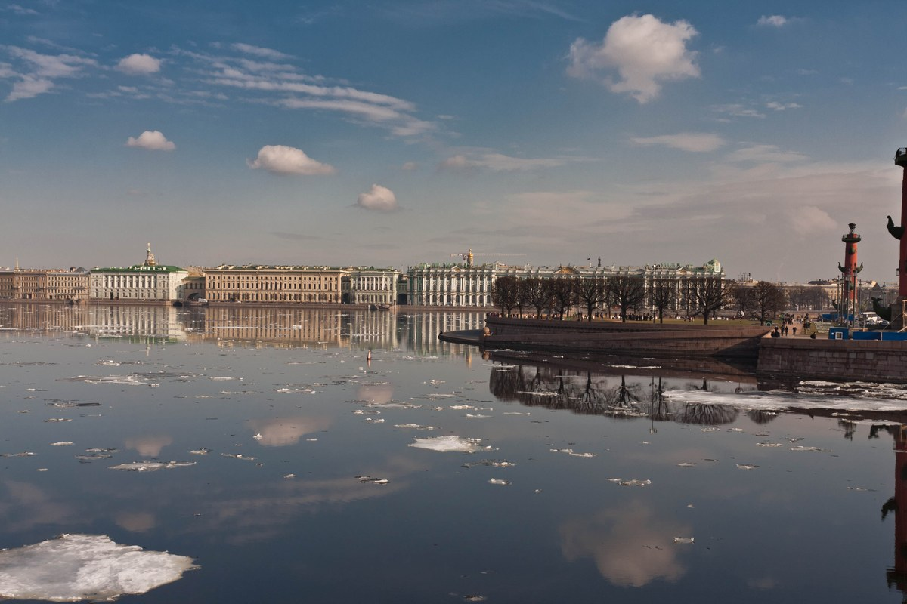
Set 1 images are boat3.jpg through boat6.jpg from the OpenCV stitching test data (opencv/opencv_extra), taken with a Canon EOS 40D at 25 mm and shown downscaled.
Set 2 · Office
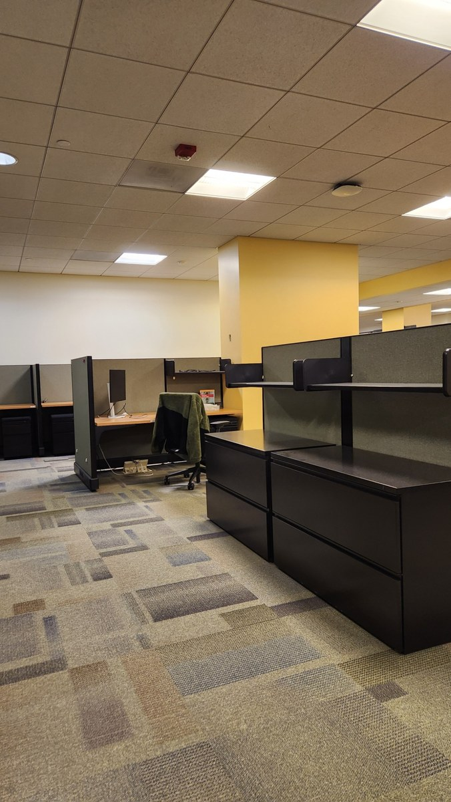
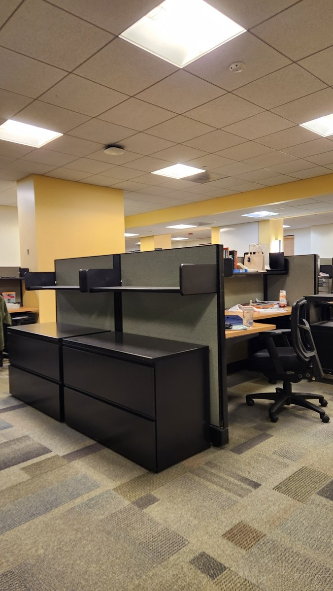
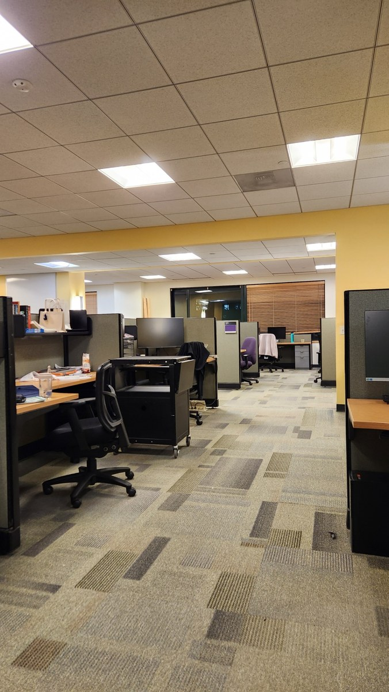
Set 3 · Desk
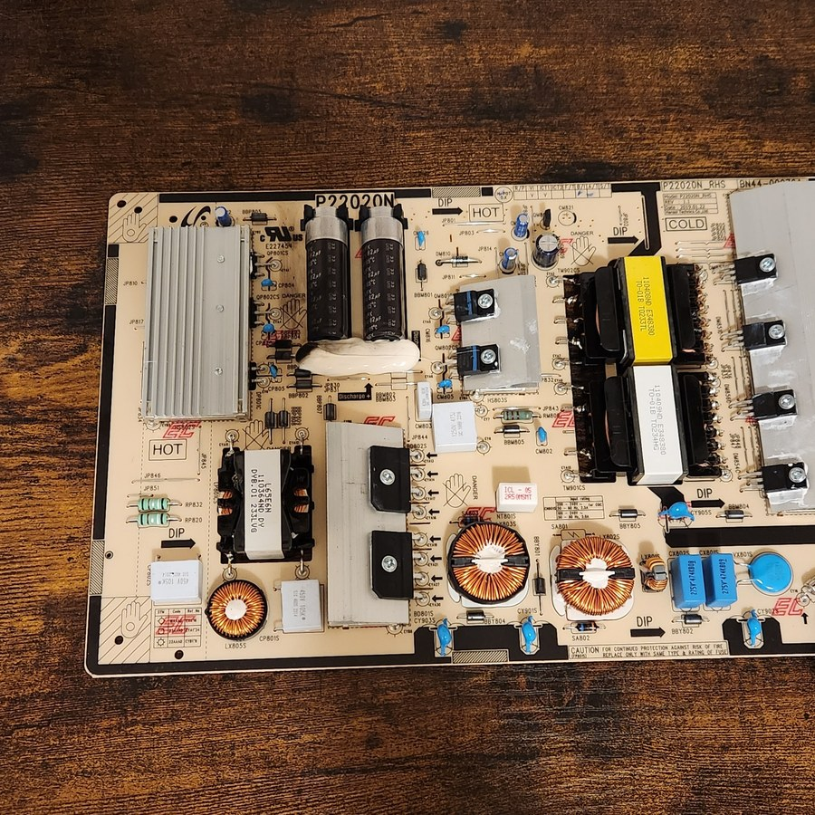
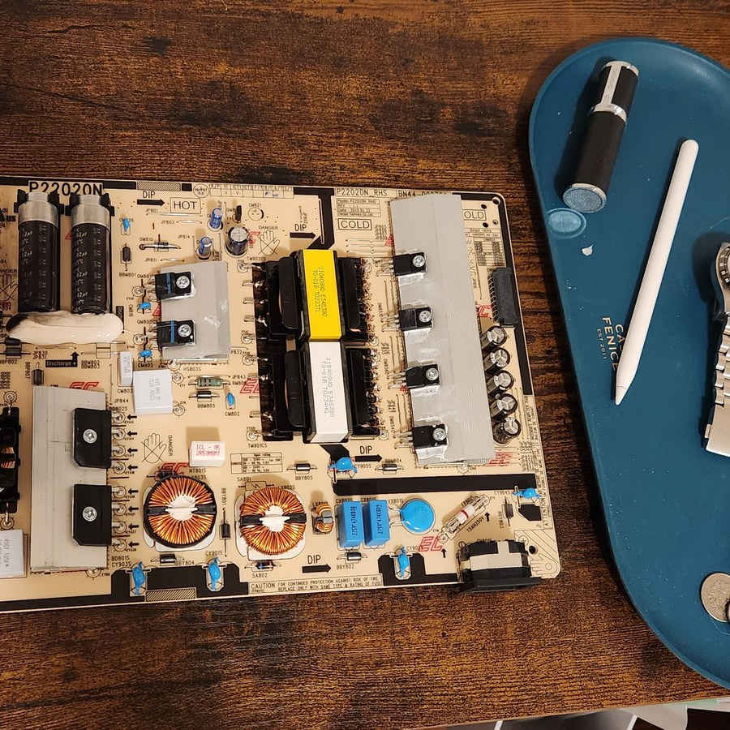
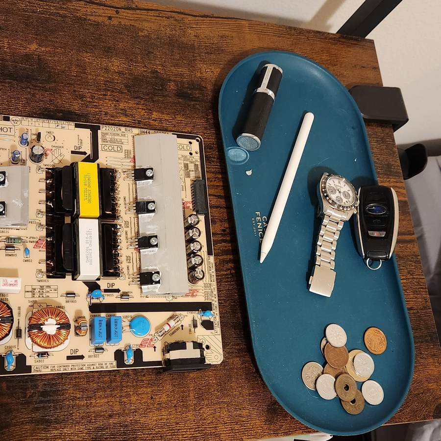
Part A · A.2
Recovering Homographies
Method
A correspondence \((x, y) \leftrightarrow (x', y')\) is related by the homography \(H\) in homogeneous coordinates. We fix the last entry of \(H\) to 1, which leaves 8 unknowns.
$$ \begin{bmatrix} w x' \\ w y' \\ w \end{bmatrix} = \begin{bmatrix} h_1 & h_2 & h_3 \\ h_4 & h_5 & h_6 \\ h_7 & h_8 & 1 \end{bmatrix} \begin{bmatrix} x \\ y \\ 1 \end{bmatrix} $$Dividing by \(w\) and rearranging gives two equations per correspondence that are linear in \(h_1, \dots, h_8\).
$$ \begin{bmatrix} x & y & 1 & 0 & 0 & 0 & -x x' & -y x' \\ 0 & 0 & 0 & x & y & 1 & -x y' & -y y' \end{bmatrix} \begin{bmatrix} h_1 \\ h_2 \\ h_3 \\ h_4 \\ h_5 \\ h_6 \\ h_7 \\ h_8 \end{bmatrix} = \begin{bmatrix} x' \\ y' \end{bmatrix} $$Stacking the rows of all \(n\) correspondences gives a linear system, which we solve by least squares.
$$ A h = b, \qquad A \in \mathbb{R}^{2n \times 8}, \quad b \in \mathbb{R}^{2n} $$ $$ \hat h = \arg\min_h \lVert A h - b \rVert^2 = (A^T A)^{-1} A^T b $$Click errors cause errors in \(H\) but least squares averages out this error. The solution \(\hat h\) is reshaped into \(H\) with 1 as the last entry.
Results
Set 1 · St. Petersburg Riverfront (boat5 → boat6)
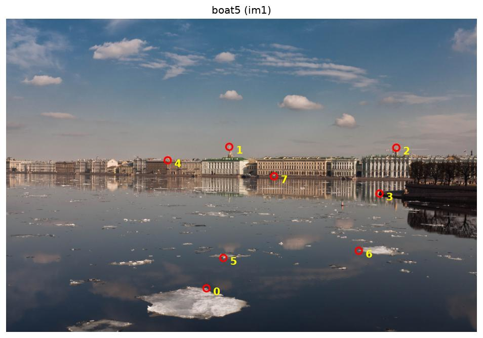
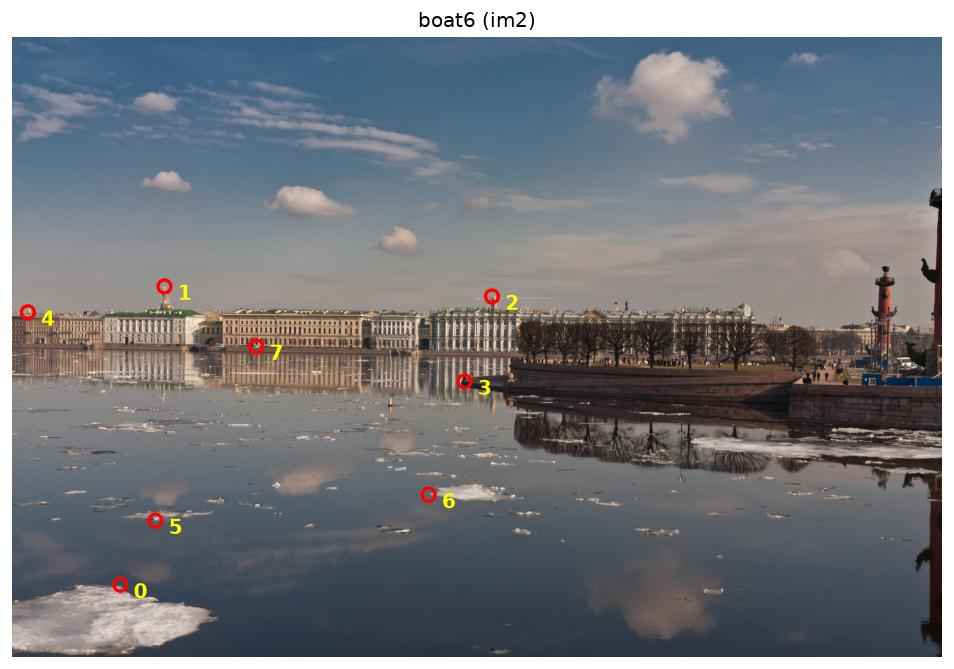
Set 2 · Office (office1 → office2, office3 → office2)
office2 is the reference image, so we recover one homography for each side image.
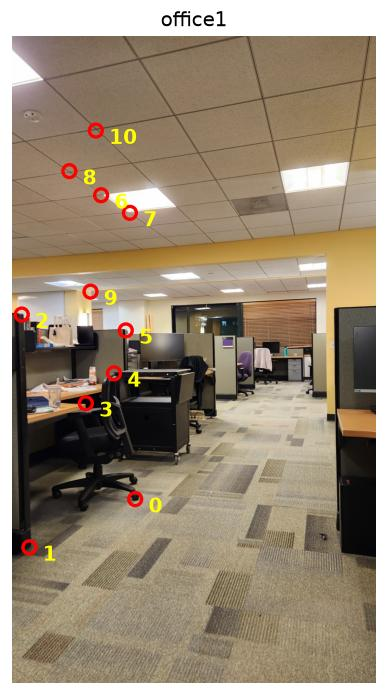
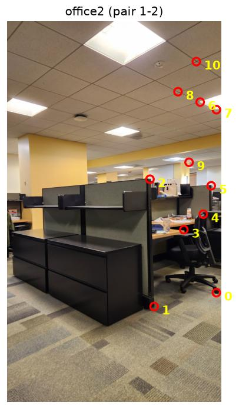
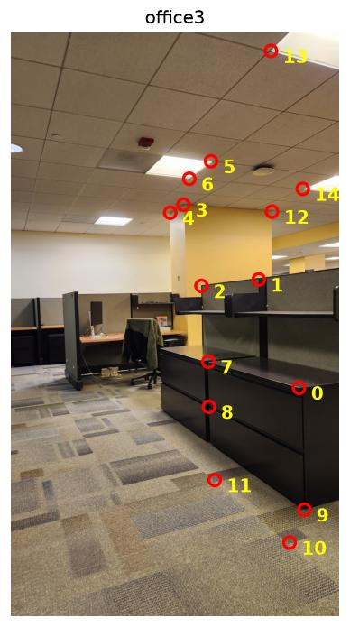
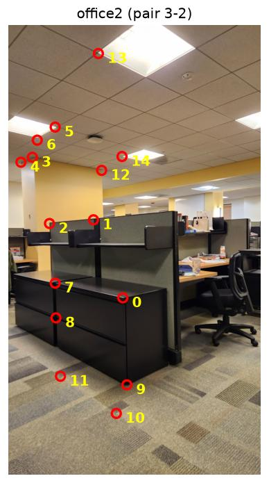
Part A · A.3
Warping the Images
Method
For each output pixel we find its source location in the input image with \(H^{-1}\) and interpolate there. Unlike forward warping, this leaves no holes.
The four input corners mapped through \(H\) give the bounding box of the warped image.
$$ (0, 0), \quad (M-1, 0), \quad (0, N-1), \quad (M-1, N-1) \;\;\xrightarrow{\;H\;}\;\; x_{\min}, x_{\max}, y_{\min}, y_{\max} $$Output pixel \((u, v)\) maps back to its source location \((x, y)\).
$$ \begin{bmatrix} \tilde x \\ \tilde y \\ \tilde w \end{bmatrix} = H^{-1} \begin{bmatrix} u + x_{\min} \\ v + y_{\min} \\ 1 \end{bmatrix}, \qquad (x, y) = \left( \frac{\tilde x}{\tilde w},\; \frac{\tilde y}{\tilde w} \right) $$Pixel centers lie at integer coordinates. Output pixels whose source falls outside the input image stay black and get alpha 0.
Nearest neighbor takes the value of the closest pixel.
$$ g(u, v) = f\big(\operatorname{round}(x),\; \operatorname{round}(y)\big) $$Bilinear blends the four surrounding pixels, weighted by the fractional offsets \(a = x - x_1\) and \(b = y - y_1\), where \(x_1 = \lfloor x \rfloor\), \(y_1 = \lfloor y \rfloor\), \(x_2 = x_1 + 1\) and \(y_2 = y_1 + 1\).
$$ g(u, v) = (1-a)(1-b)\, f_{11} + a(1-b)\, f_{21} + (1-a)\, b\, f_{12} + a\, b\, f_{22}, \qquad f_{ij} = f(x_i, y_j) $$Rectification
We click the four corners of a square carpet tile and map them to a \(100 \times 100\) square. Warping with the resulting \(H\) gives a top down view of the floor. The output covers only the part of the photo below the floor’s vanishing line, where \(w = 0\). Objects that are not on the floor, such as cabinets and chairs, are stretched.
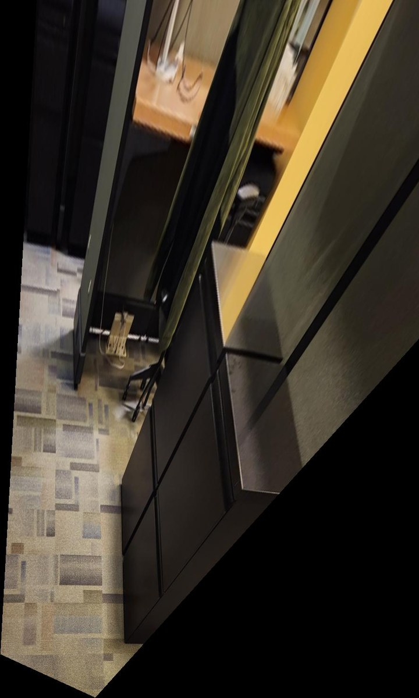
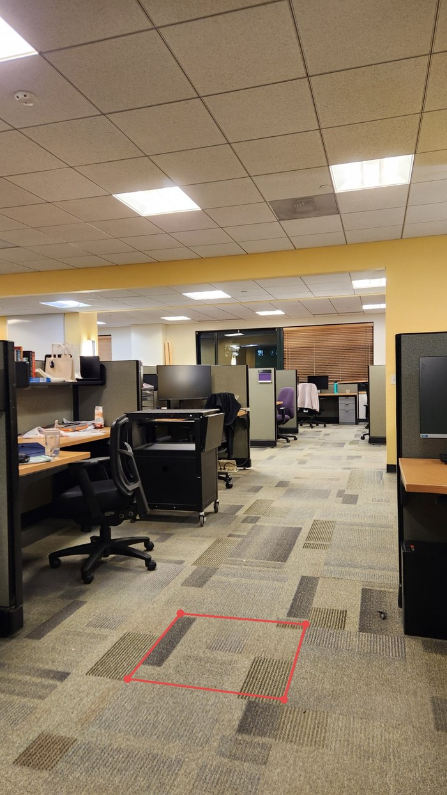
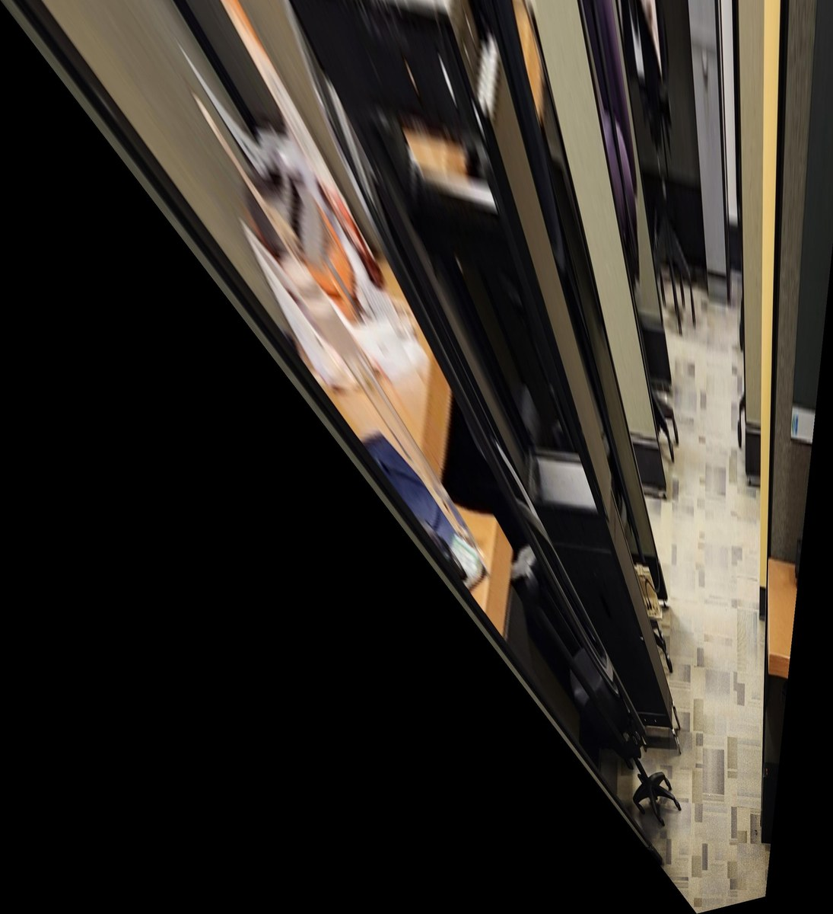
Nearest Neighbor vs. Bilinear
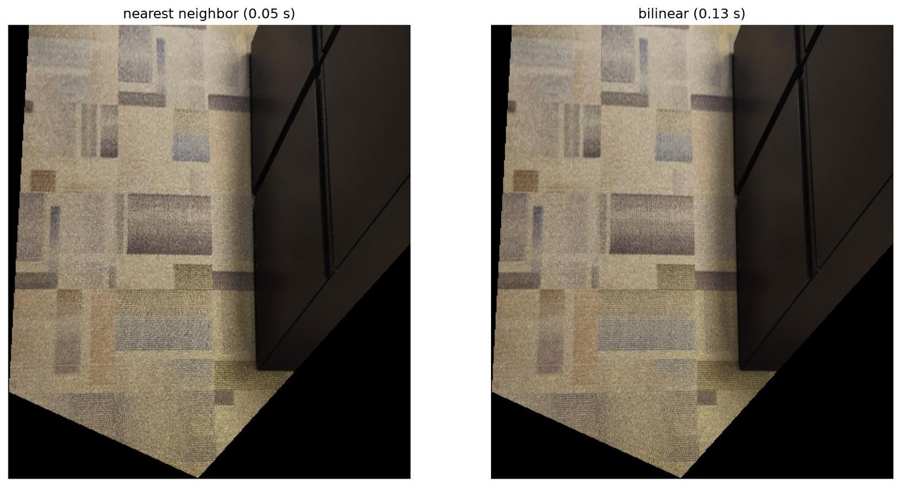
| Method | Time (s) |
|---|---|
| Nearest neighbor | 0.05 |
| Bilinear | 0.13 |
Nearest neighbor reads one pixel per output pixel and bilinear reads four, so bilinear is about 2.6 times slower. Where the warp stretches the image, nearest neighbor repeats pixels and gives blocky edges, while bilinear gives smooth transitions with slight blur. Both run in well under a second, so we use bilinear for the mosaics.
↑ Back to topPart A · A.4
Blending the Images into a Mosaic
Method
We leave one reference image unwarped, boat4 for Set 1, office2 for Set 2 and desk2 for Set 3, and warp the others into its frame with their homographies from A.2.
The canvas covers the reference image and all warped bounding boxes. A translation \(T\) moves its top left corner \((x_{\min}, y_{\min})\) to the origin.
$$ T = \begin{bmatrix} 1 & 0 & -x_{\min} \\ 0 & 1 & -y_{\min} \\ 0 & 0 & 1 \end{bmatrix}, \qquad \text{image } i \mapsto T H_i, \qquad \text{reference} \mapsto T $$Each image is weighted by its distance transform \(\alpha_i\), which is 1 at the image center and 0 at its border.
$$ I(q) = \frac{\sum_i \alpha_i(q)\, I_i(q)}{\sum_i \alpha_i(q)} $$This feathering blurs fine details that are slightly misaligned, so we use two band blending. The low band \(G_\sigma * I_i\) is feathered, and the high band \(I_i - G_\sigma * I_i\) is taken from the image with the largest \(\alpha_i\).
Results
Mosaic 1 · St. Petersburg Riverfront
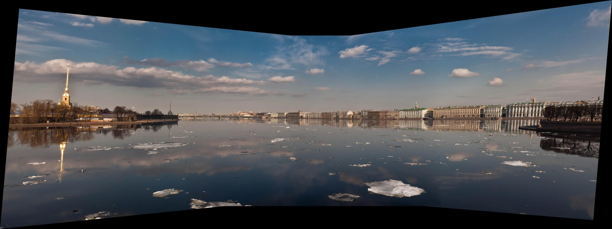
Mosaic 2 · Office
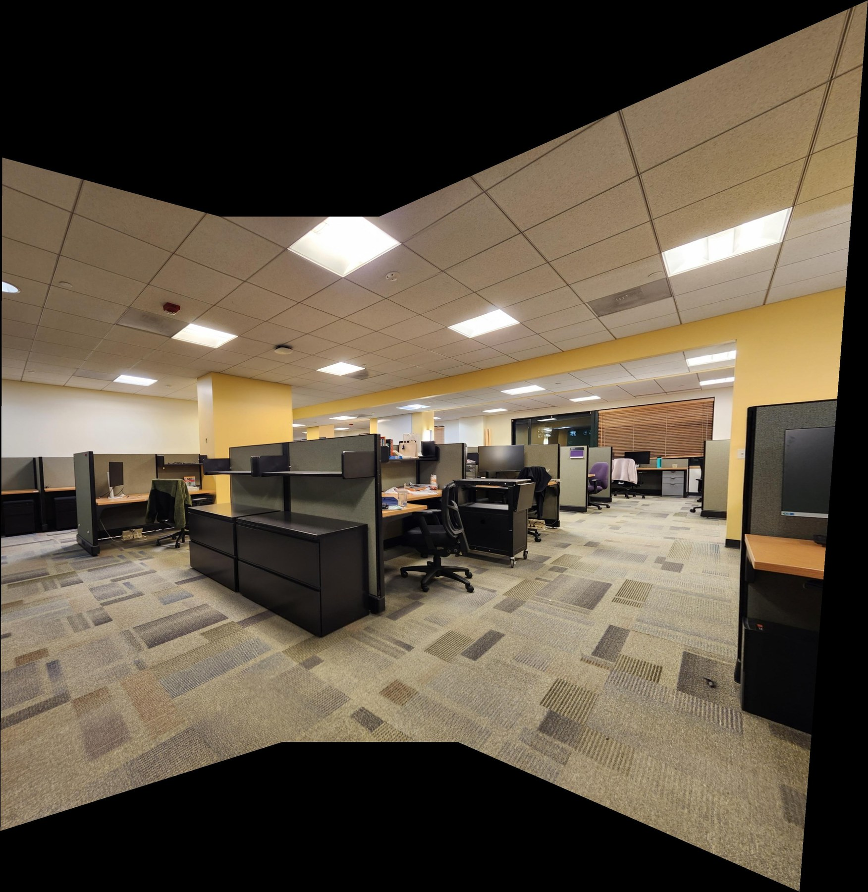
Mosaic 3 · Desk
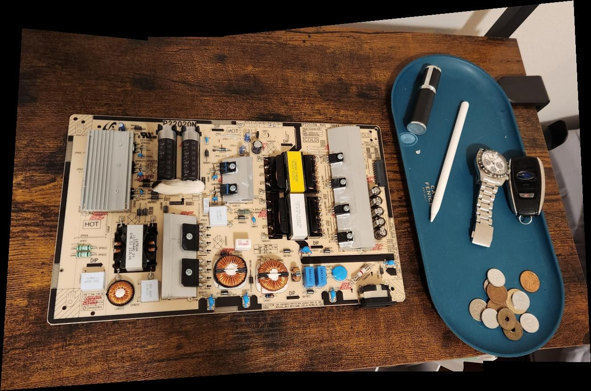
Part A · A.5 · Bells & Whistles
Spherical Mapping
Method
A planar mosaic stretches content far from the reference view, since positions on the plane grow with \(\tan\theta\). We instead project the mosaic onto a sphere around the camera. An output pixel \((u, v)\) corresponds to longitude \(\theta\) and latitude \(\phi\), with \(f\) pixels per radian.
$$ \theta = \frac{u}{f}, \qquad \phi = \frac{v}{f} $$The direction \((\theta, \phi)\) is the ray \((\sin\theta\cos\phi,\, \sin\phi,\, \cos\theta\cos\phi)\). It meets the reference image plane at the point below, where \((c_x, c_y)\) is the reference image center.
$$ x = f \tan\theta + c_x, \qquad y = \frac{f \tan\phi}{\cos\theta} + c_y $$We map this point into each original image with \(H_i^{-1}\) and sample it bilinearly. Sampling the original images directly, rather than the warped planar mosaic, keeps the full resolution. The images are blended with the two band blending from A.4. The output covers the angular range of all image borders. For the boat set, \(f = 4370\) pixels follows from the EXIF focal length of 25 mm. For the office and desk sets, which have no focal length metadata, we choose the \(f\) that gives the least distortion.
Results
St. Petersburg Riverfront
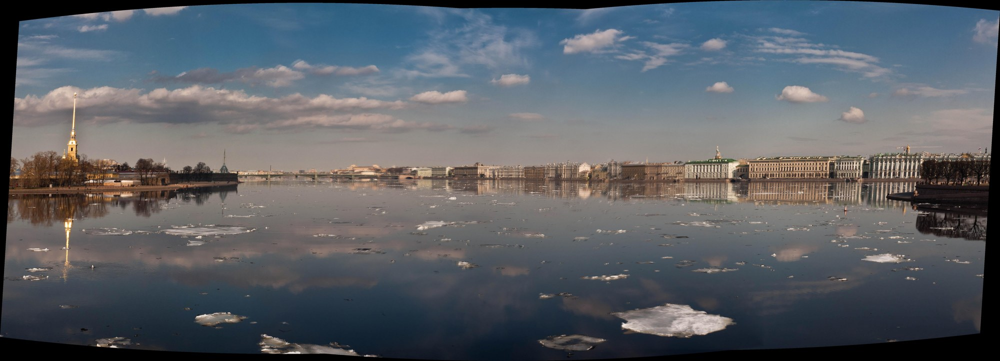
Office
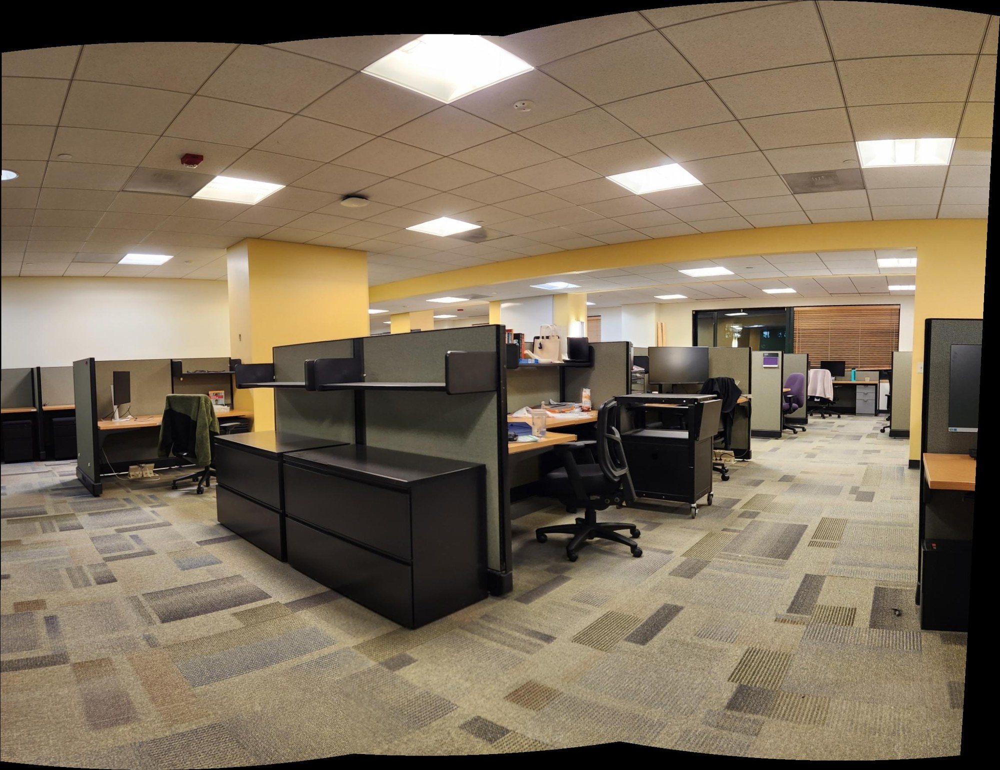
Desk
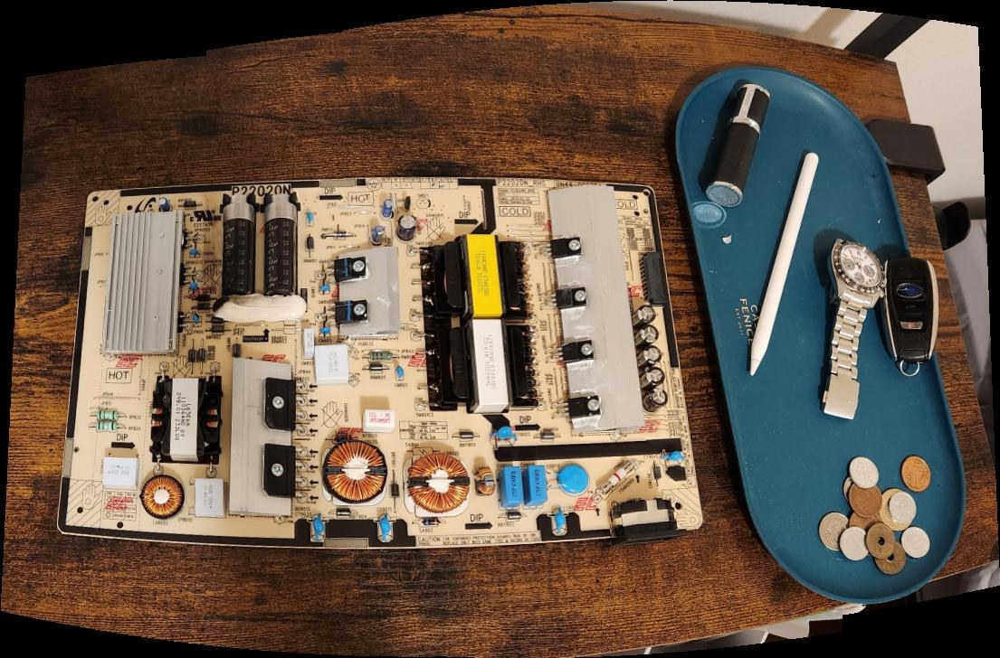